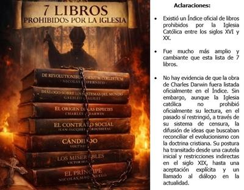

Durante siglos, la Iglesia católica no sólo se arrogó el monopolio de la «verdad espiritual», sino también el control del conocimiento. Y no se trató de un exceso aislado, ni de errores puntuales: fue una política sistemática de censura intelectual, formalizada y sostenida en el tiempo, cuyo instrumento más emblemático fue el Index Librorum Prohibitorum (Índice de Libros Prohibidos), vigente oficialmente desde el siglo XVI hasta 1966. La existencia misma de esta lista revela una verdad embarazosa: la Iglesia temió al pensamiento libre mucho más de lo que debió temer a la ignorancia.


El Índice no era una curiosidad bibliográfica ni una advertencia simbólica. Era una herramienta de control ideológico. Prohibía leer, poseer, copiar o difundir obras consideradas «peligrosas para la fe y la moral», una etiqueta lo suficientemente ambigua como para abarcar desde tratados científicos hasta novelas, desde filosofía política hasta sátiras literarias. Copérnico, Galileo, Rousseau, Voltaire, Maquiavelo, Descartes, Kant, Gibbon y muchos otros, pasaron a ser enemigos del «pensamiento correcto», no por errores factuales, sino por atreverse a pensar fuera del marco teológico impuesto.
Pero el problema no fue sólo la prohibición en sí, sino el motivo real detrás de ella. La Iglesia nunca censuró libros para «proteger a las personas», como suele afirmarse en discursos apologéticos modernos. Censuró para proteger su autoridad, su cosmovisión y su posición de poder. El heliocentrismo no era peligroso porque fuera falso —de hecho, era correcto—, sino porque desmontaba una interpretación bíblica literal y, con ella, la idea de una Iglesia como intérprete infalible del cosmos. La filosofía política de Rousseau o Maquiavelo no era subversiva por inmoral, sino porque desafiaba la noción de que el poder emanaba de «Dios» y no de los seres humanos.
Y esta actitud tuvo consecuencias profundas. En los territorios donde la Iglesia ejerció mayor influencia —especialmente en Europa del sur y América Latina— la censura intelectual contribuyó a un atraso científico, educativo y cultural, frente a regiones donde el control religioso fue menor o se debilitó antes. Mientras en algunos países se debatía abiertamente sobre astronomía, física, filosofía política o derechos civiles, en otros se vigilaba qué libros podían circular, qué ideas podían enseñarse y qué preguntas podían formularse sin caer en sospecha de herejía.
Se trata de una censura que no sólo retrasó el acceso al conocimiento; deformó la relación de las sociedades con el pensamiento crítico. Generó miedo a preguntar, desconfianza hacia la duda, y una educación basada en la obediencia intelectual. No es casual que muchas sociedades fuertemente católicas hayan arrastrado durante siglos sistemas educativos dogmáticos, escasa alfabetización científica y una fuerte resistencia cultural a la crítica religiosa. El daño no fue únicamente académico: fue psicológico y social.
Además, la censura eclesiástica no actuó en el vacío. En numerosos períodos históricos, la Iglesia contó con la colaboración activa de los Estados. Gobiernos civiles prohibieron imprentas, persiguieron editores y castigaron lectores en nombre del orden religioso. La frontera entre «pecado» y delito se volvió difusa, y la represión del pensamiento se legitimó como defensa del bien común. La excomunión, el descrédito social, el encarcelamiento o el exilio, fueron precios reales que muchos pagaron por leer o escribir.
Algunos defensores actuales intentan minimizar este pasado, alegando que «era otra época» o que «todos censuraban». Pero este argumento no exculpa nada. Precisamente porque fue una época marcada por la ignorancia y el autoritarismo, resulta aún más grave que una institución que se proclamaba guía moral, haya actuado como enemiga sistemática del conocimiento. El progreso humano nunca vino de la censura, sino de la confrontación de ideas, del error corregido, de la crítica libre.
Que el Index Librorum Prohibitorum haya sido abolido hasta en 1966, no es un detalle menor: muestra hasta qué punto la Iglesia tardó en aceptar —y aún admite con reservas— que la verdad no necesita protección frente a los libros. Sólo las ideologías frágiles temen a la lectura.
La lección histórica es clara. Cada vez que una institución, religiosa o no, pretende decidir qué ideas pueden circular y cuáles deben silenciarse, el resultado es el mismo: empobrecimiento intelectual, atraso social y daño humano. La censura no protege a las sociedades; las infantiliza. Y la Iglesia católica, en su largo historial de libros prohibidos, dejó una huella profunda de oportunidades perdidas, mentes acalladas y siglos de progreso retrasado.
Si el conocimiento fue prohibido, no fue para proteger la fe. Fue para proteger el poder.
[Godless Freeman]
[Crédito de imagen: Relatos de media noche]
Comentarios
Comments powered by Disqus